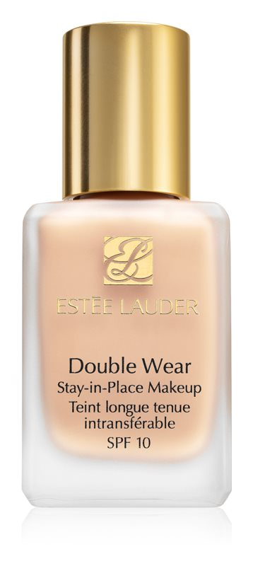
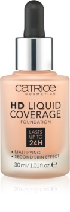
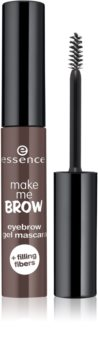
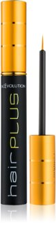
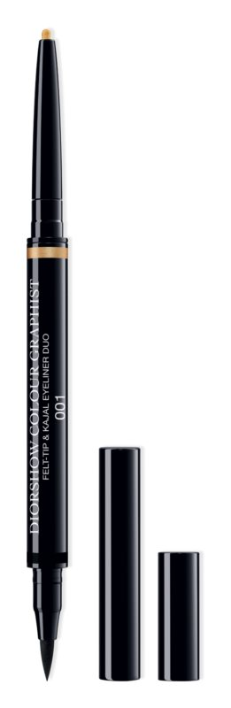
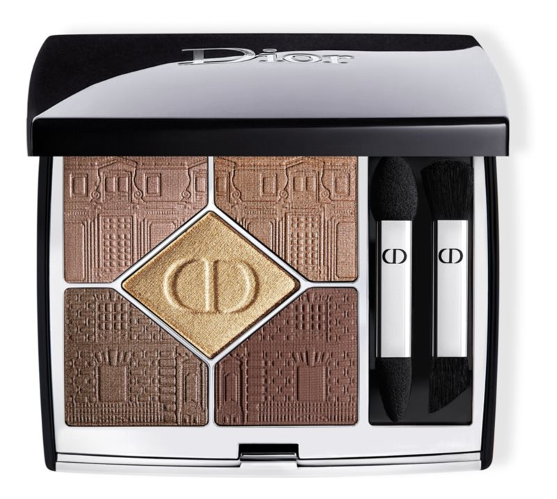

Estée Lauder Double Wear Stay-in-Place
За всеки тон и подтон на кожата. Дълготрайният фон дьо тен Estée Lauder Double Wear Stay-in-Place се
произвежда в широка скала нюанси, от които лесно ще си изберете такъв, който е точно по мярка на вашата
кожа. Върху лицето е изключително лек и приятен и въпреки това се отличава с 24-часова издръжливост.
Перфектно уеднаквява кожата, прикрива несъвършенствата и не се изтрива.
Спокойно можете да оставите огледалцето у дома, в течение на деня гримът ви няма да има нужда от
корекции. Както се гримирате сутринта, така ще изглеждате и вечер, преди да премахнете грима. При това
няма значение колко тежък е бил денят ви. Опитайте и ще разберете защо фон дьо тенът Double Wear
Stay-in-Place е избор номер едно за милиони жени по целия свят.

Catrice HD Liquid Coverage
Силно, но при това естествено покритие? Екстремно ефикасният и дълготраен фон дьо тен Catrice HD Liquid
Coverage незабавно се слива с кожата и ще го носите като втора кожа. Съвършеното покритие без усещане за
натоварване издържа до 24 часа – за красива и матова кожа, готова за изява пред камерите.
Характеристики:
перфектен вид в продължение на 24 часа
висока покривна способност с естествен ефект
придава на кожата матов оттенък и скрива несъвършенствата ѝ
не натоварва кожата благодарение на съвършено леката, течна текстура

Essence Make Me Brow
Дръжте под контрол необузданите си вежди. Гелът за вежди Essence Make Me Brow подчертава веждите и
очертава формата им, придава им обгрижен вид и същевременно заглажда косъмчетата. Благодарение на
трайното си съдържание издържа от сутринта до вечерта.

FacEvolution Hairplus
Серумът за растеж на мигли и вежди FacEvolution Hairplus е уникален продукт без хормони, който ще ви
помогне да постигнете максималната естествена дължина и гъстота на миглите. Доказано удължава миглите и
подчертава цвета на миглите и веждите.
Клиничните изследвания доказват, че най-голям растеж на миглите се постига между 4-тата и 8-мата
седмица, а именно с 40-45% от първоначалната им дължина.

Diorshow Colour Graphist Summer Dune Limited Edition
Diorshow Colour Graphist е първата* очна линия с двустранен филцов връх и въглен, Вашият основен съюзник
за интензивен, дълготраен и водоустойчив грим за очи.
Мекият и прецизен филцов връх определя линията на миглата с движение на дълбок цвят и с бляскав матов
завършек.
Въгленовият връх разкрива наситен цвят с бляскав завършек, като се плъзга над водната линия, за да
придаде блясък на очите.
* В Dior.
Всеки край на Diorshow Colour Graphist може да бъде използван за постигане на различен вид на грима,
който да подхожда на Вашето настроение и на желания ефект: очна линия за изтънчен външен вид и въглен за
блестящи и подчертани очи.
Интензивен, дълготраен, водоустойчив цвят, който се запазва през целия ден. В единия край – очна линия с
филцов връх с интензивен цвят. В другия край – деликатен блестящ въглен с кремообразна текстура. Дует в
два цвята, лимитирано издание на колекция „Лятна дюна“.

Diorshow 5 Couleurs Couture
Двете изключителни* палитри за грим 5 Couleurs Couture се отличават с деликатен мотив, който проследява
архитектурните линии на емблематичния адрес на модна къща Dior.
* В Dior.
За естествен вид:
1. Нанесете средния нюанс върху целия подвижен клепач с апликатора с широка гъба, за да отворите очите.
2. След това добавете очертание, като използвате апликатора с тънка гъба, за да нанесете най-тъмния
нюанс по линията на миглите.
3. С помощта на четката със скосен ъгъл подчертайте с най-светлия нюанс зоната под арката на веждата и
вътрешния ъгъл на окото, за да изглеждат очите по-широки.
За изискан външен вид:
1. Нанесете средния нюанс върху целия подвижен клепач с апликатора с широка гъба за открояване на очите,
а след това най-тъмния нюанс по линията на миглите с апликатора с тънка гъба за очертаване.
2. Смесете над целия подвижен клепач и навън с помощта на четката за смесване.
3. Използвайте апликатора с широка гъба, за да подчертаете с най-светлия нюанс зоната под арката на
веждите и вътрешния ъгъл на окото, за да създадете още по-голям контраст и структура.